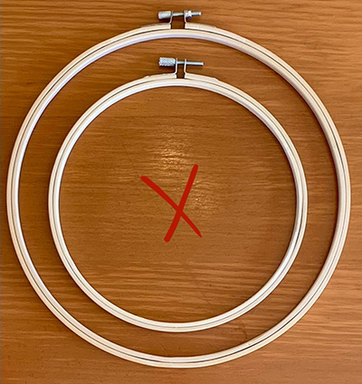
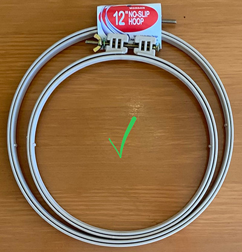
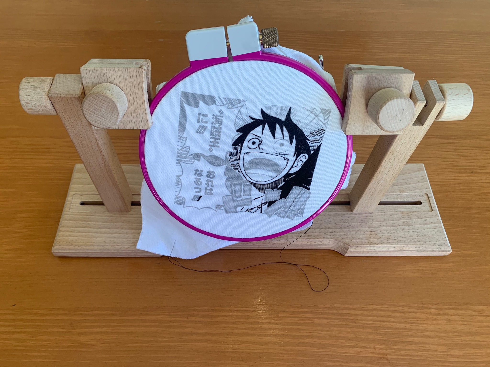
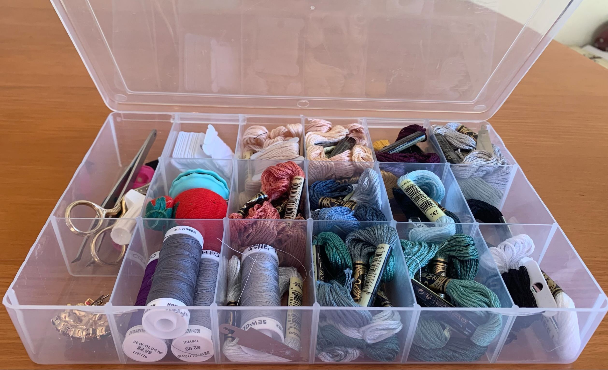

Embroidery requires a lot of materials and the price can add up quickly.
Here, I will show materials that absolutely necessary to get started.
Hoops
Here's something I learned the hard way: If you buy a good hoop, it will do most of the work for you. I intially used wooden hoops, which are very pretty but are horrible for tension. If you want a good hoop, I recommend one made out of hard plastic, like these. These are less pliable and allow for good, long-lasting tension which is critical for an embroidered piece. Without tension, the piece will be difficult to work with, and a lot of precision will be lost. It also may lead to the project slipping out mid-project, which is both scary and frustrating. Invest in a good hoop and save yourself some stress!

bad hoop

good hoop
Thread
Thread, thread, thread. Just as important as the hoop, the thread will determine how the final piece will look. To embroider, the primary type of thread used is called floss. Floss is pretty much 6 strands of thin thread twisted into one giant thread. The strands can be picked apart to adjust the thickness, and resultingly, the detail of your final piece. Though the brand of thread does not particularly matter, it is the thickness that matters. The general rule is that the thinner the thread, the more detailed the piece will be. However, this also means that the piece will take more time, as there is less room filled per stitch. To create accurate and beautiful line art, I recommend using one strand of floss. If you are a perfectionist, a trick in the embroidery community is to use generic sewing thread to get all the super fine details.
Needles
To use the thread, we must have a needle. Needle sizes range from 2-12, with a larger numbers being thinner. The same general rule sort of applies. With a larger needle, you will get less detail. The thinner the needle, the more detail. In addition, heavier fabrics will require thicker needles (2, 3, or 4 for example), in order easily puncture the fabric. To thread a needle, follow these steps:
Cut out about an arm's length of thread
Dampen one end of the thread
Insert through the eye of the needle
Bring both ends together, and tie them into a knot
Notice that threading the needle leads to the thread being doubled up. You must take this is mind beforehand. For example, if you plan to embroider with 4 out of 6 strands, use 2 strands because they will be doubled up. Similarly, if you want to embroider with 2 strands, only thread one strand through.
Fabric
Fabric is to an embroiderer as a canvas is to a painter. As such, the type of fabric used is very important. There are many, many different fabrics out there. For simplicity's sake, I will only name a few I have found after much trial and error:
Duck canvas
Linen
Monk's cloth
Each of these fabrics have a high weave count, yet are lightweight enough to embroider easily. Personally, I use a combination of duck canvas layered over linen.
Scissors
Lastly, you are going to need something to cut stuff up. I simply recommend a small pair of sharp embroidery scissors such as these.
Optional Materials
These materials are optional, but make the embroidery experience much more pleasant.
Embroidery Stand
A stable embroidery helps keep your project upright so that both of your hands are free for stitching. It also help prevent back problems from arching forward too much.

Embroidery box
It is also nice to have a container to keep all your embroidery knick knacks. They are cheap and super useful!

Sticker paper + Printer
This will be useful later on. If you do not have one, do not worry!